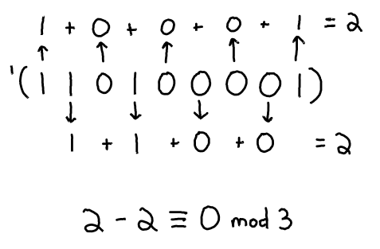
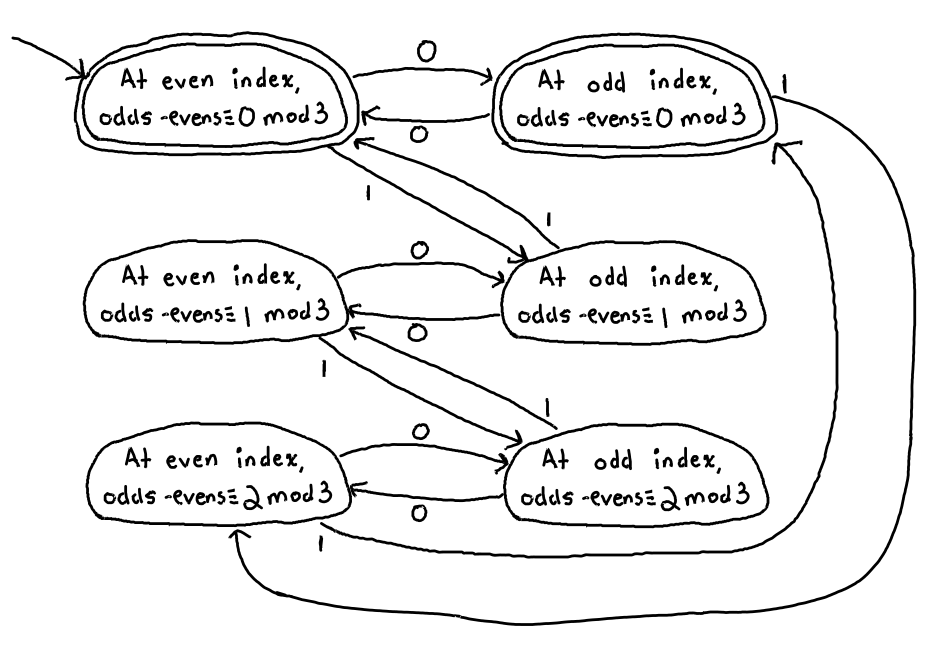
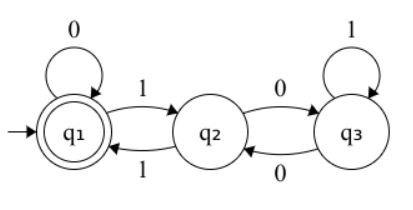
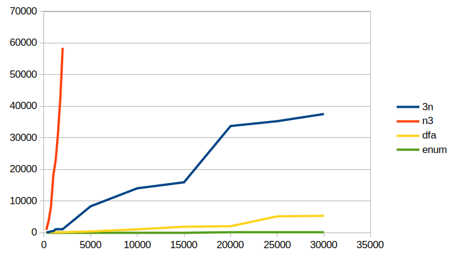
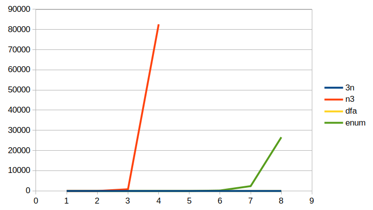

miniKanren Drag Racing
x is an Oleg number (explained below)
x is a multiple of 3. In other words, there exists some natural number n such that x = 3n
Which relation can most quickly output the first 10000 multiples of 3?
Which relation can most quickly recognize 999999999 as being a multiple of 3?
Which relation can most quickly recognize 1000000000 as not being a multiple of 3?
All code in this article was executed using the miniKanren implementation from TRS2, but faster-miniKanren could also be used.
(define (base-ten n) (match n ('() 0) (`(,head . ,tail) (+ head (* 2 (base-ten tail))))))
Now, onto the four implementations:
1 The straightforward approach
miniKanren excels at modeling facts of the form "there exists" by using the fresh keyword. Also, there is a well-understood relation (*o a b c) which models facts of the form ab = c where a, b, and c are Oleg numbers. Putting these together yields a first attempt at multiple-of-3o, which I will call the 3n approach:
(defrel (multiple-of-3o-3n x) (fresh (n) (*o '(1 1) n x)))
Knowing that '(1 1) is the Oleg number representing the constant 3, this miniKanren relation directly encodes the statement \exists n.3n = x
Here are the first 15 multiples of 3 that this relation generates. Notice they are somewhat out of order, but all unique.
> (map base-ten (run 15 q (multiple-of-3o-3n q))) '(0 3 6 12 24 9 48 15 21 96 27 39 18 33 45)
A value is fully ground if it has no fresh variables.
A different version of the same statement can be created by swapping n and '(1 1) in the relation definition. I’ll call this the n3 approach.
(defrel (multiple-of-3o-n3 x) (fresh (n) (*o n '(1 1) x))) > (map base-ten (run 15 q (multiple-of-3o-n3 q))) '(0 3 6 12 24 48 9 96 15 18 192 30 21 36 27)
2 Exploiting the structure of multiples of 3
Since this is a necessary and sufficient condition, I’m pretty sure that any correct implementation of the relation must fully ground its results.
For example, '(1 1 0 1 0 0 0 0 1) is divisible by 3 as demonstrated in the below picture.

Since this is a congruence mod 3, there are only a finite number of states to consider while adding up the odd- and even-indexed bits. At any point while scanning through the list of bits: 0 mod 3, 1 mod 3, and 2 mod 3. By considering these 3 possibilities, while also keeping track of whether the next bit is at an odd or even index, one can establish 3 * 2 = 6 pairs of states such that, if the list is exhausted while on a 0 mod 3 state, the number is divisible by 3. Below is a deterministic finite automaton (DFA) which encodes this algorithm.

While this DFA is correct, it can be minimized. I used an online tool at https://aswaddev.github.io/dfa-minimizer/ to produce a DFA with only 3 states:

Converting a DFA into a miniKanren relation is straightforward: proceed recursively through the list while maintaining a state (here represented as a symbol), and only accept an empty list if the current state is an accepting state. The translation from DFA to miniKanren clauses is mostly direct with one exception: encountering a 0 requires the tail of the list to be nonempty (a pair instead of the empty list), since Oleg numerals cannot end in 0.
The DFA encoded as a relation, dfao and its helper relation pairo:
(defrel (dfao l state) (conde ((== l '()) (== state 'q1)) ((fresh (head tail next-state) (== l `(,head . ,tail)) (conde ((== head 0) (pairo tail) (conde ((== state 'q1) (== next-state 'q1)) ((== state 'q2) (== next-state 'q3)) ((== state 'q3) (== next-state 'q2)))) ((== head 1) (conde ((== state 'q1) (== next-state 'q2)) ((== state 'q2) (== next-state 'q1)) ((== state 'q3) (== next-state 'q3))))) (dfao tail next-state))))) (defrel (pairo l) (fresh (a d) (== l `(,a . ,d))))
So the divisibility relation can be defined by referencing dfao on the starting state 'q1. I’ll call it the dfa approach.
(defrel (multiple-of-3o-dfa x) (dfao x 'q1)) > (map base-ten (run 15 q (multiple-of-3o-dfa q))) '(0 3 6 15 12 9 30 27 24 21 18 63 60 57 54)
This looks unordered still, but look at the raw Oleg results:
> (run 15 q (multiple-of-3o-dfa q)) '(() (1 1) (0 1 1) (1 1 1 1) (0 0 1 1) (1 0 0 1) (0 1 1 1 1) (1 1 0 1 1) (0 0 0 1 1) (1 0 1 0 1) (0 1 0 0 1) (1 1 1 1 1 1) (0 0 1 1 1 1) (1 0 0 1 1 1) (0 1 1 0 1 1))
They are still ordered by length.
3 Enumerating all multiples of 3
My last approach is to encode the following mathematical statement: x = 0 \lor x = 3 \lor x = 6 \lor x = 9 \lor x = 12 \ldots
This requires breaking the rules of miniKanren: creating a relation which relies on one of its arguments to always be ground. That way I can call functions (rather than relations) like build-num and +, since I am dealing with a number and never a fresh variable. This hack relation is not worthy of the conventional -o suffix.
(defrel (danger! x ground) (conde ((== x (build-num ground))) ((danger! x (+ 3 ground)))))
The divisibility relation can be defined by seeding an initial ground value of 0 to danger!. I will suffix it with enum.
(defrel (multiple-of-3o-enum x) (danger! x 0)) > (map base-ten (run 15 q (multiple-of-3o-enum q))) '(0 3 6 9 12 15 18 21 24 27 30 33 36 39 42)
The results here are ordered.
4 Start your engines
For the first drag race, I will run the following expression for each of the 4 implementations, and for increasing values of n. Only the cpu time is considered.
(time (run n q (multiple-of-3o q)) (void))
The (void) call is a simple way to suppress the output of (run n ...) while timing.
5 Ready, set, go!

n |
| 3n |
| n3 |
| dfa |
| enum |
250 |
| 76 |
| 889 |
| 8 |
| 0 |
500 |
| 168 |
| 3790 |
| 112 |
| 0 |
750 |
| 410 |
| 8309 |
| 59 |
| 0 |
1000 |
| 468 |
| 18165 |
| 54 |
| 1 |
1250 |
| 1033 |
| 22868 |
| 68 |
| 1 |
1500 |
| 1042 |
| 31357 |
| 123 |
| 1 |
1750 |
| 1036 |
| 42626 |
| 136 |
| 3 |
2000 |
| 1153 |
| 58484 |
| 130 |
| 3 |
5000 |
| 8342 |
| - |
| 383 |
| 8 |
10000 |
| 14033 |
| - |
| 1040 |
| 20 |
15000 |
| 15919 |
| - |
| 1858 |
| 27 |
20000 |
| 33743 |
| - |
| 2023 |
| 38 |
25000 |
| 35274 |
| - |
| 5149 |
| 58 |
30000 |
| 37538 |
| - |
| 5314 |
| 85 |
I stopped measuring n3 early on because it was doing horribly. What takes enum a handful of miliseconds takes nearly a minute for n3. Omitting n3 for higher inputs allows seeing real differences among the other 3 implementations. One easy takeaway is that if you’re comfortable doing a divisibility against a constant value by using the existential approach with *o, make sure the constant is the first value, not the second! It makes a huge difference.
So it looks like enum is the best choice, but that’s only for generating values from a fresh variable. What if you want to use the relation to test if an already-fully-ground value is divisible by 3?
Here is the code template for the next drag race. Here we just want to find one answer, (.0), to indicate that the number x, (some variation of 999...) is indeed a multiple of 3.
(time (run 1 q (multiple-of-3o-enum (build-num x))))

10ⁿ−1 |
| 3n |
| n3 |
| dfa |
| enum |
1 |
| 0 |
| 1 |
| 0 |
| 0 |
2 |
| 0 |
| 7 |
| 0 |
| 0 |
3 |
| 1 |
| 775 |
| 0 |
| 0 |
4 |
| 2 |
| 82604 |
| 0 |
| 1 |
5 |
| 4 |
| - |
| 0 |
| 18 |
6 |
| 10 |
| - |
| 0 |
| 163 |
7 |
| 14 |
| - |
| 0 |
| 2329 |
8 |
| 23 |
| - |
| 0 |
| 26567 |
But now at higher values of x, enum starts to do badly! That is becasue it fully enumerates every multiple of 3 in order, and there are many, many multiples of 3 that come before 99999999. dfa remains speedy because it actually explores the Oleg number it is given, so its runtime depends only on the bitlength of the Oleg number rather than the value, which can be up to 2^n for some bitlength n. 3n also seems to be faring fine, which surprised me.